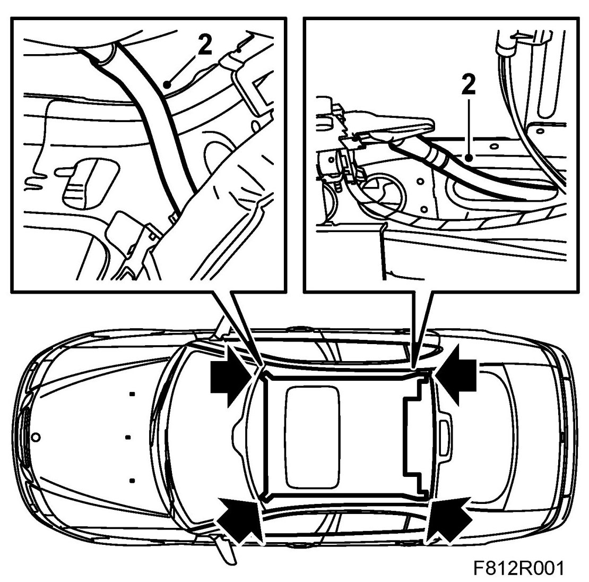
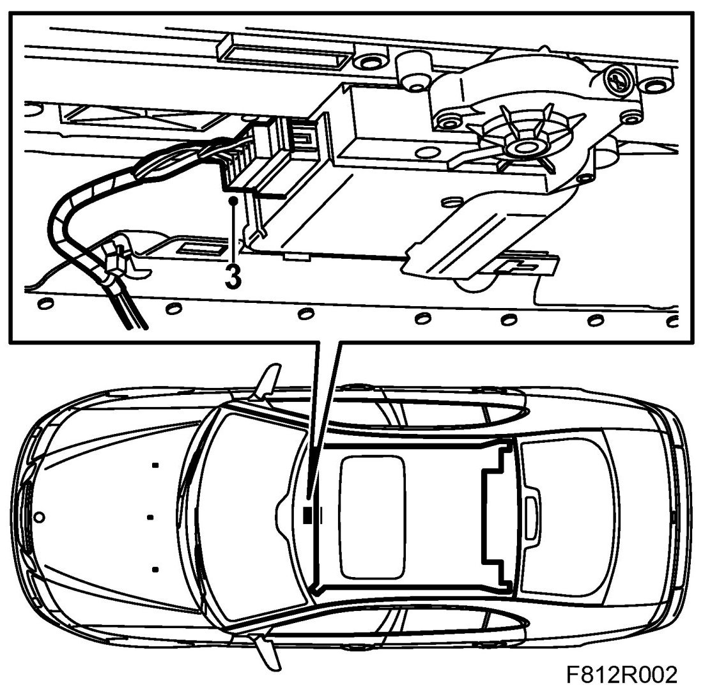
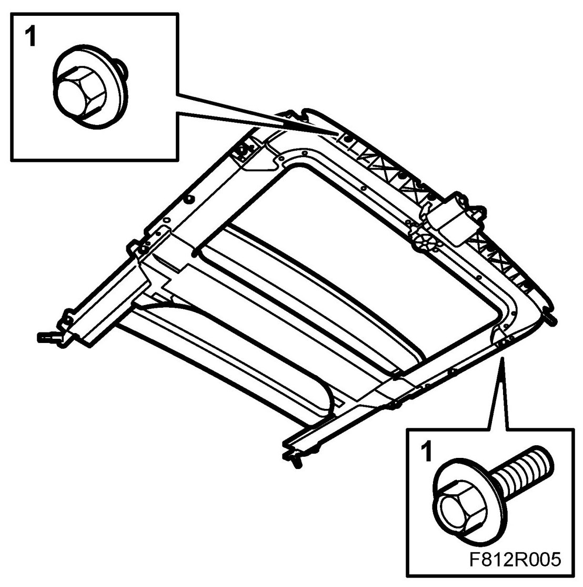
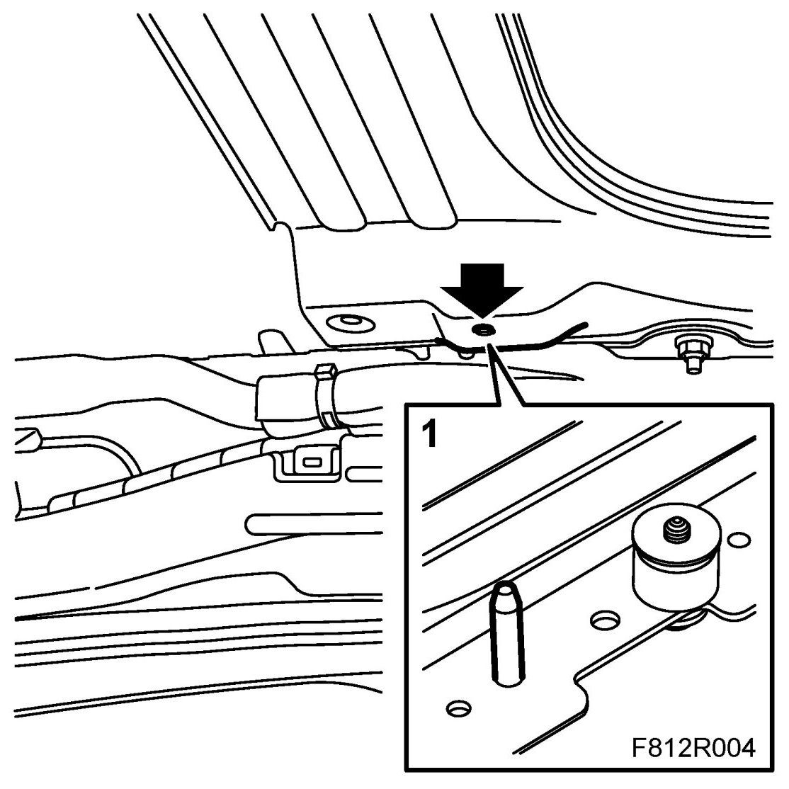
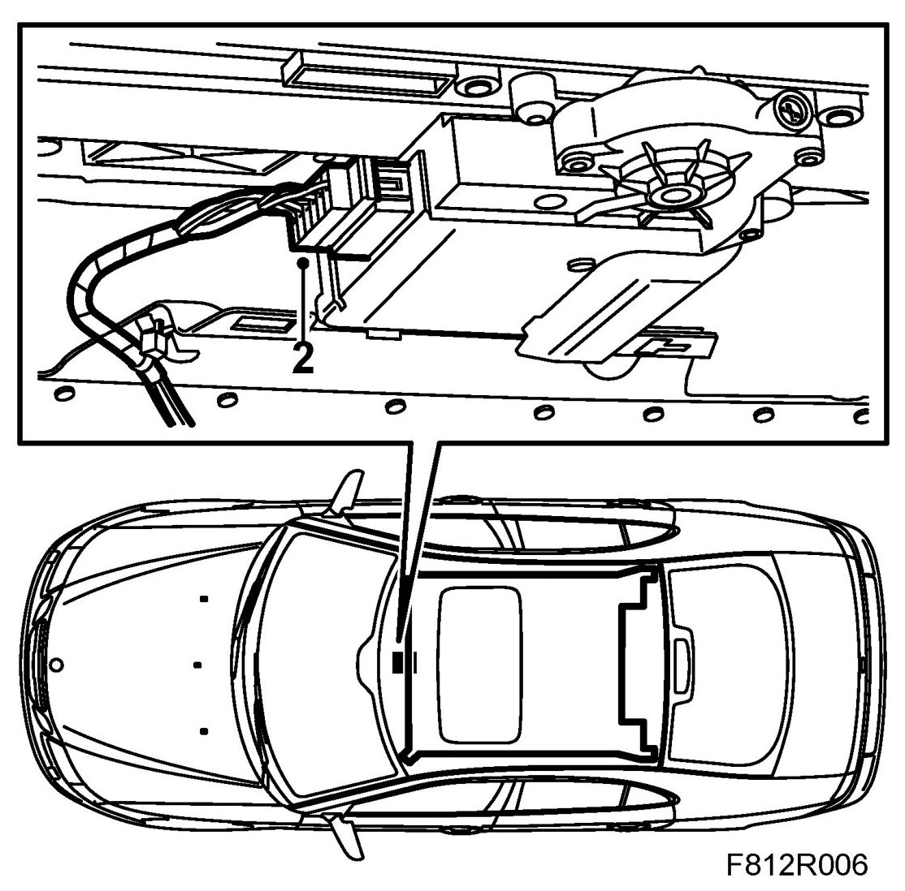
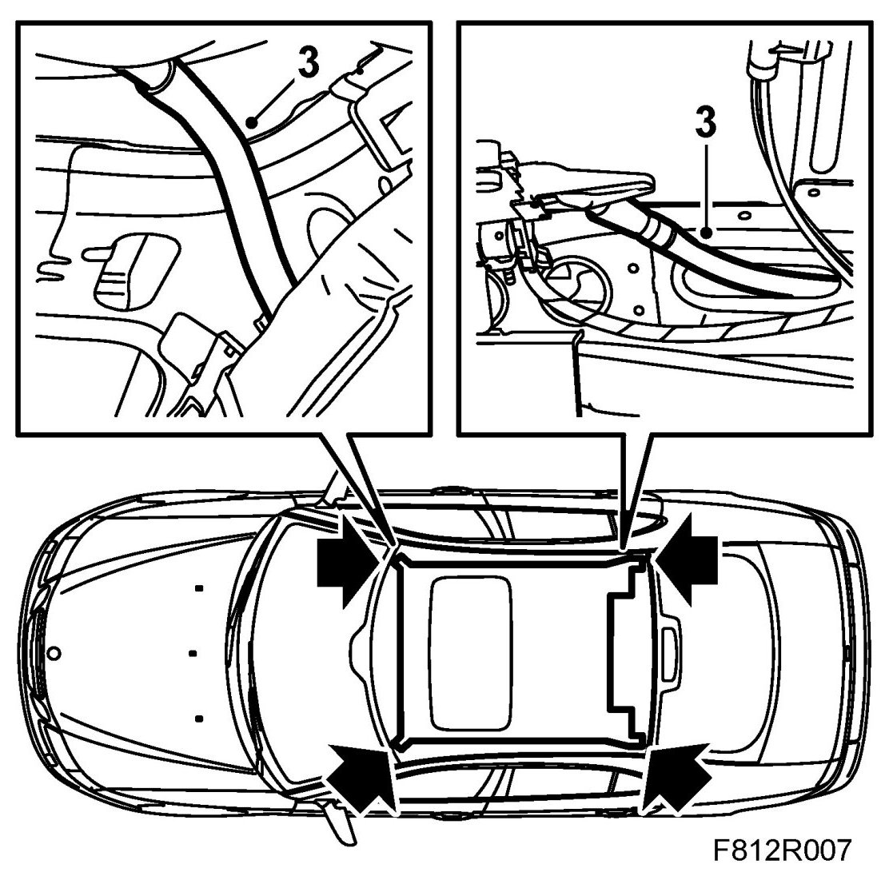

Sunroof Assembly
Sunroof Assembly
To remove
1. Remove the headlining, see Headlining, 4D, Headlining 4D, US/CA or Headlining, 5D.
2. Detach the drainage hoses from the sunroof assembly.

3. Unplug the connector from the sunroof motor.

NOTE: Take care when lifting down the sunroof assembly so that its sharp edges do not damage anything.
4. Note the position of the bolts. Remove the bolts from the sunroof assembly and carefully lift out the sunroof assembly through the luggage compartment.
To fit
NOTE: It is essential the bolts are fitted in the correct positions as they are different lengths.

1. Lift in the sunroof assembly through the luggage compartment. Position the sunroof assembly with the help of the guide pins and fit the assembly.

2. Plug in the connector to the sunroof motor.

3. Fit the drainage hoses to the sunroof assembly.

4. Fit the headlining, see Headlining 4D , Headlining 4D, US/CA or Headlining, 5D
5. Check the operation of the sunroof.